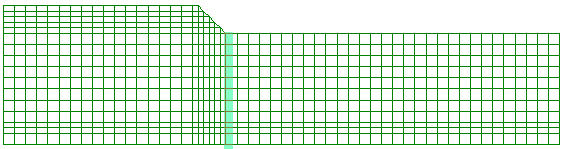
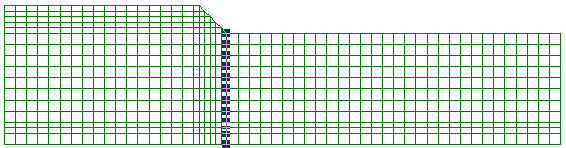
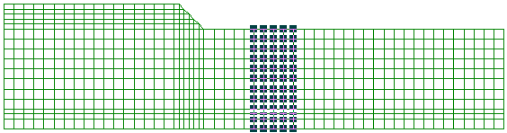
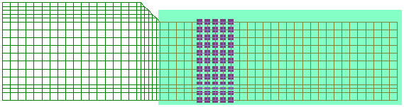
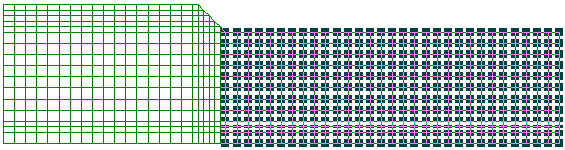
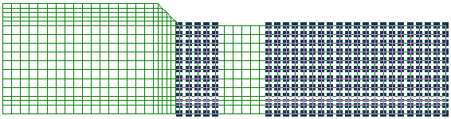

節点・要素の選択はメイン画面上で行います。計算結果の属性が節点対応では節点の選択が行え、要素対応では要素の選択を行うことができます。マウスの左ボタンを押したままメッシュ図をドラッグすると矩形が表示され、矩形で囲まれた範囲を指定できます。マウスの左ボタンを離すと、この矩形に含まれる節点・要素が選択されます。[Shift]キーもしくは、[Ctrl]キーを押したままで、節点・要素指定を継続して行うことができます。また、節点・要素をクリックすると1つのの節点・要素を指定できます。
<選択方法>| 選択方法 | 内容 |
| マウスをクリック | 1つの節点・要素を選択します。 |
| マウスをドラッグ | 複数の節点・要素を選択します。 |
[Shift]キーもしくは、[Ctrl]キーを押したままで、節点・要素指定を継続して行うことができます。
| キー | 内容 |
| [Shift] | 選択中の節点・要素の指定は解除されません。 |
| [Ctrl] | 選択中の節点・要素の指定は解除されます。 |
以下は盛土法尻位置のY方向の節点を全て選択している例です。
<節点選択中>
<節点選択後>
[Shift]・[Ctrl]キーを使用した場合の節点の選択例を以下に示します。
<現在選択中>
<現在選択中の状態を継続して選択中>
<[Shift]キーを使用した場合>
<[Ctrl]キーを使用した場合>